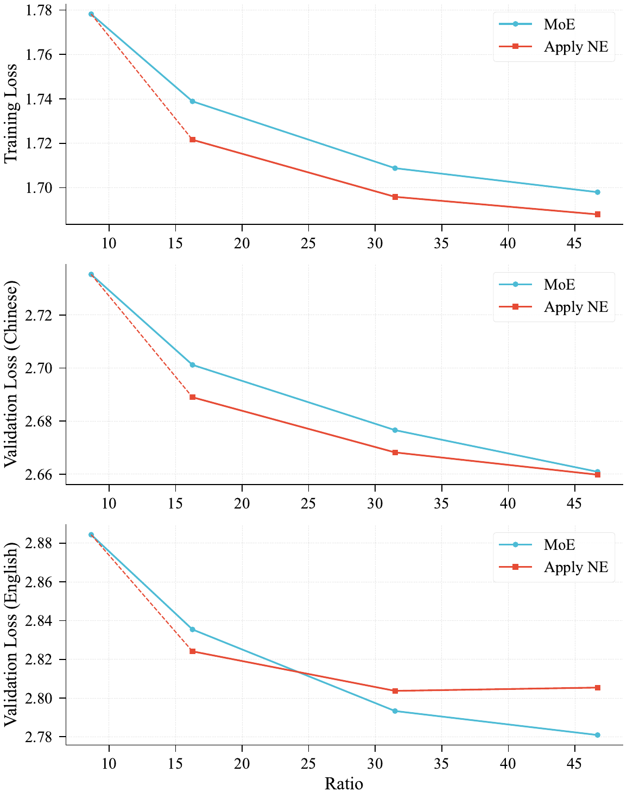

Small-Base Motivation + N-gram Embedding
The conventional wisdom: MoE is the only path to scaling sparsity. But the embedding layer is an overlooked sparsity dimension orthogonal to MoE — its lookup is $O(1)$, so parameter count can scale freely with almost no compute / comm overhead. This paper systematically proves: in the right regime, putting params into embeddings beats putting them into experts.

Once MoE expert count passes its sweet spot into the saturation regime, instead of adding more experts, allocate params to N-gram Embedding. Under wide models + moderate depth (≤40 shortcut layers) small-base regime, NE gives a better Pareto frontier.
Each n-gram embedding is split into $K$ sub-tables, hidden size scaled down by $\frac{1}{(N-1)K}$, with $W_{n,k}$ projecting back to original space. Total param count is independent of $N, K$ (sub-table dim scales inversely), so hash collisions can be mitigated without growing the parameter budget.
In low-sparsity regimes, NE cannot compete with more experts. NE only opens an advantage window after expert count passes the sweet spot.
U-shaped curve: past a certain ratio, NE is worse than MoE. Intersection is around ratio = 20.
Vocab size off the base-vocab integer multiple (avoid 2-gram hash collisions); $N \in [3,5]$, $K \geq 2$ is hyperparameter-insensitive.
Scaling Experiments: When does NE beat MoE?
Three controlled scaling experiments (280M / 790M / 1.3B activated) systematically compare NE vs. MoE baseline compute-loss curves. Key conclusion: the wider the model and the shallower the depth, the larger NE's advantage window.

MoE gives large gains in low-sparsity regimes, but log-linear decay in high-sparsity. Low-ratio NE < MoE baseline; high-ratio NE > MoE baseline.
280M activated: NE loses to MoE above ratio 30. 790M: only the English val set loses. 1.3B: NE still wins at ratio 50 — wider models, wider NE advantage.
At 1.3B, NE advantage is clear at 20 layers but shrinks at 40 (pre-norm residual signal decay). NE works in ≤40 shortcut layers (80 regular layers).

Fig: 500M activated scalingsrc/assets/scaling-500M_n.png